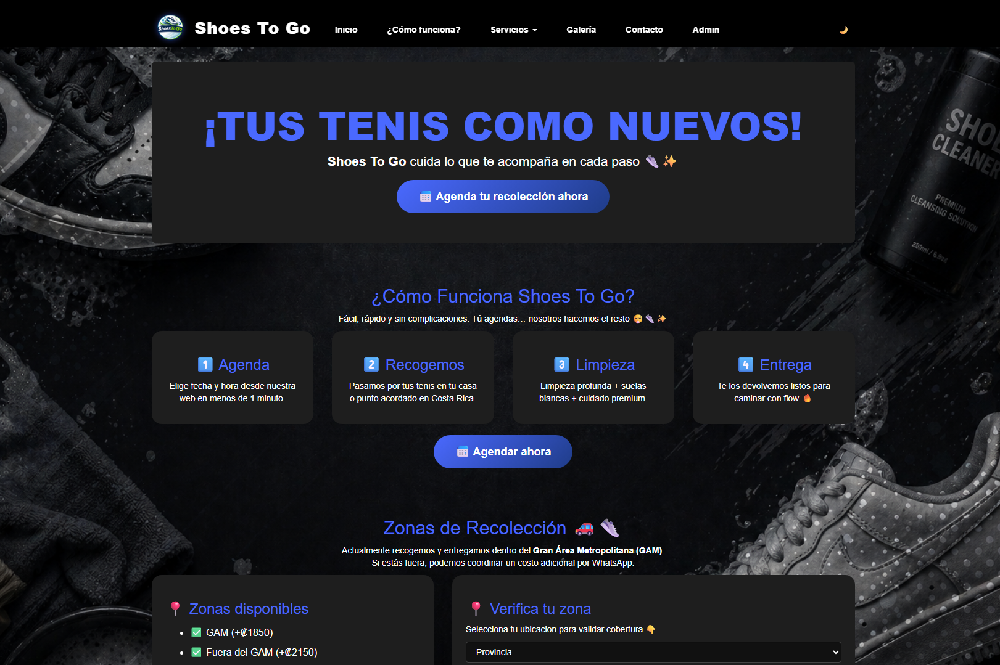
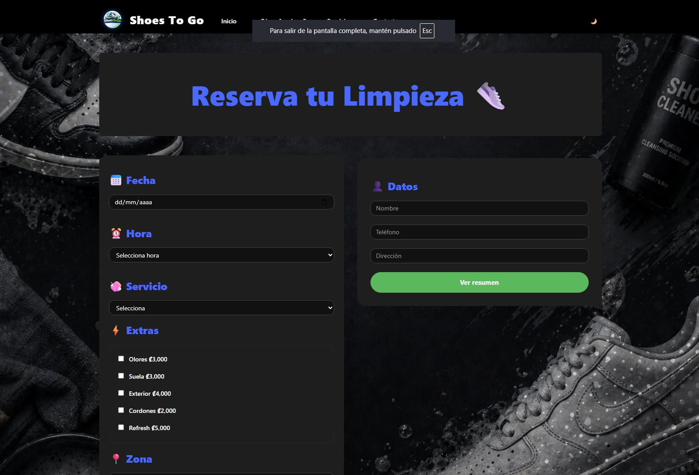

Sobre el proyecto
Shoes To Go es un proyecto web desarrollado como parte de los proyectos que forman parte de mi portafolio.
Proyecto web de tienda de calzado
Shoes To Go es un proyecto web desarrollado como parte de los proyectos que forman parte de mi portafolio.
Desarrollar una página web para presentar una propuesta relacionada con una tienda de calzado.


Definición de la idea y estructura del proyecto.
Diseño de la interfaz y estructura visual.
Implementación de la página y funcionalidades.
Corrección de errores y ajustes.
Proyecto funcional presentado en el portafolio.